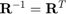
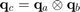
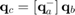
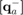
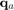
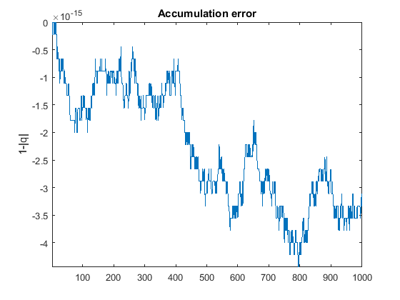

Quaternion demo
The use of quaternion related function of this toolbox will be covered in this demo
Contents
The null quaternion
First of all let us familiarize with quaternions by generating the null rotation quaternion and assigning it to a variable q0
q0 = zq
the value of the null quaternion is:
q0 =
0
0
0
1
we can now compute the direction cosine matrix R and verify that the result is the identity
R = q2dcm(q0)
R =
1 0 0
0 1 0
0 0 1
Since quaternion represents a parametrization of SO(3) but have 4 elements, some ambiguities arise. A quaternion and its negative represents still the same attitude. In fact
q2dcm(-q0)
ans =
1 0 0
0 1 0
0 0 1
This is due to the above mentioned ambiguities. In order to represent SO(3) the four element quaternion has to obey a simple rule: it must be of unitary length. In fact
norm(q0)
gives a unitary response.
ans =
1
And this is valid for all quaternions representing attitude. Moreover, the identity quaternion has the property of being equal to its conjugate. As a matter of fact this is true for any identity elements of a particular group (see group theory).
The random quaternion
another useful function to familiarize with quaternions and quaternion functions is the random quaternion. The function generates a random quaternion q with unitary length.
q = randq
q =
-0.5541
-0.5016
0.3204
0.5819
We can check the norm of the quaternion as before
norm(q)
ans =
1.0000
and of course test that the DCM is equal for both q and -q
R = q2dcm(q) R == q2dcm(-q)
R =
0.2914 0.9289 0.2287
0.1830 0.1805 -0.9664
-0.9390 0.3234 -0.1173
ans =
1 1 1
1 1 1
1 1 1
Generating quaternions
Another way to generate quaternion is using the q_gen function. Let us generate a quaternion that represents a 90 degrees rotation around the x axis.
q = q_gen('x',90*pi/180)
q =
0.7071
0
0
0.7071
Then its DCM is given by
q2dcm(q)
ans =
1.0000 0 0
0 0.0000 1.0000
0 -1.0000 0.0000
The same results can be obtained by using
q = q_gen([1;0;0],90*pi/180); q2dcm(q)
ans =
1.0000 0 0
0 0.0000 1.0000
0 -1.0000 0.0000
Since the function q_gen permits to generate the quaternions also using a generic vector direction. The functions allows to construct quaternions by subsequent rotations, fore example:
q = q_gen('xy',[45,65]*pi/180)
q =
0.3228
0.4964
0.2056
0.7792
This is the equivalent of a rotation around the x axis followed by a rotation on the y axis. The resulting DCM is
R = q2dcm(q)
R =
0.4226 0.6409 -0.6409
0 0.7071 0.7071
0.9063 -0.2988 0.2988
and is equal of
qx = q_gen('x',45*pi/180); qy = q_gen('y',65*pi/180); Rx = q2dcm(qx); Ry = q2dcm(qy); R = Ry*Rx
R =
0.4226 0.6409 -0.6409
0 0.7071 0.7071
0.9063 -0.2988 0.2988
Inverting a rotation
It is common to rotate around axes to generate a DCM. Sometimes rotations have to be reversed and it is equivalent of inverting the DCM. The DCM has the interesting property of being orthonormal, thus the following rules applies: . It is also equivalent to apply rotation in an inverted order and sign.
qi = q_gen('yx',-[65,45]*pi/180);
[R',q2dcm(qi)]
ans =
0.4226 0 0.9063 0.4226 0 0.9063
0.6409 0.7071 -0.2988 0.6409 0.7071 -0.2988
-0.6409 0.7071 0.2988 -0.6409 0.7071 0.2988
but what is the relation between q and qi ?
[q,qi]
ans =
0.3228 -0.3228
0.4964 -0.4964
0.2056 -0.2056
0.7792 0.7792
It's easy to see that the vector component of the quaternion qi is opposite in sign of the quaternion q. The inversion of rotation is a pretty easy operation in terms of quaternions and is usually called conjugate The quaternion conjugate of a quaternion is a quaternion with inverted vector part and constant scalar part. The function qconj is used for this purpose.
qi = qconj(q)
qi =
-0.3228
-0.4964
-0.2056
0.7792
Quaternion multiplication
The operation of consequent rotation is non other than a quaternion multiplication. The unitary quaternion group is closed with respect to the multiplication operation since the product of two quaternions gives another quaternions. The unitarity conditions is respected during the quaternion multiplication process. The multiplication is formally written as:

can be written in matrix form as

Where  is a special matrix representation of . Let us make use of the symbolic toolbox to visualize such operation
qa = sym('qa',[4,1],'real'); qb = sym('qb',[4,1],'real'); crossqm(qa)
ans = [ qa4, qa3, -qa2, qa1] [ -qa3, qa4, qa1, qa2] [ qa2, -qa1, qa4, qa3] [ -qa1, -qa2, -qa3, qa4]
which is formed as the sum of a transposed cross matrix (the matrix form of a cross product) plus an identity matrix multiplied by the scalar part, all adjunt by the vector part and its opposite on the sides and the scalar part as final element.
[crossmt(qa(1:3))+qa(4)*eye(3),qa(1:3)
-qa(1:3)',qa(4)]
ans = [ qa4, qa3, -qa2, qa1] [ -qa3, qa4, qa1, qa2] [ qa2, -qa1, qa4, qa3] [ -qa1, -qa2, -qa3, qa4]
Then let us verify that the function crossqm effectively describes the multiplication (i.e. rotation)
qxy = crossqm(qy)*qx [q2dcm(qxy),R]
qxy =
0.3228
0.4964
0.2056
0.7792
ans =
0.4226 0.6409 -0.6409 0.4226 0.6409 -0.6409
0 0.7071 0.7071 0 0.7071 0.7071
0.9063 -0.2988 0.2988 0.9063 -0.2988 0.2988
The function crossqm has a counterpart called crossqp and permits to obtain the same result.
qxy = crossqp(qx)*qy
qxy =
0.3228
0.4964
0.2056
0.7792
This can be verified also using the symbolic variables
crossqm(qa)*qb-crossqp(qb)*qa
ans = 0 0 0 0
Quaternion division
in the same way as a rotation can be reversed in terms of DCM, a multiplication of quaternions can be inverted, hence the division operation. Should be noted that since we are dealing with unitary quaternions, the inverse of crossqm and crossqp are merely the transpose.
qc = crossqm(qa)*qb; qb_rev = simplify(crossqm(qa)'*qc); subs(qb_rev,qa'*qa,1)
and the results is of course qb
ans = qb1 qb2 qb3 qb4
As a matter of fact the transpose of crossqp and crossqm can be obtained by simply applying the conjugate operation
crossqm(qa)'-crossqm(qconj(qa))
ans = [ 0, 0, 0, 0] [ 0, 0, 0, 0] [ 0, 0, 0, 0] [ 0, 0, 0, 0]
The same simmetry that exists for multiplication can be found also here in the division operation, in fact
qb_rev = simplify(crossqmt(qc)*qa); subs(qb_rev,qa'*qa,1)
is still equal to qb
ans = qb1 qb2 qb3 qb4
hence we have that crossqmt and crossqpt are dual version of the transposes of crossqm and crossqp respectively.
crossqmt(qc)*qa-crossqm(qa)'*qc
ans = 0 0 0 0
A characteristic of crossqmt and crossqpt is that the vector parts adjoint on the core [3x3] matrix are always positive, while the identity matrix multiplied by the scalar part is always negative.
crossqpt(qa)
ans = [ -qa4, -qa3, qa2, qa1] [ qa3, -qa4, -qa1, qa2] [ -qa2, qa1, -qa4, qa3] [ qa1, qa2, qa3, qa4]
Unitary condition
As mentioned before an important issue for quaternions representing the attitude is the unitarity condition. Let us try that out
q = randq; err_0 = 1-norm(q); err = zeros(1,100); for i = 1 : 1000 q = crossqm(randq)*q; err(i) = 1-norm(q); end err = [err_0,err]; figure plot(err) axis tight, title 'Accumulation error', ylabel '1-|q|' snapnow;
Errors accumulate multiplication by multiplication, however the increase is very small and inherent to the truncation error.
Minimal representation
Quaternions are a 4 dimensional representation of SO(3). This has some implications and may lead to some ambiguities or singularities, like unwinding in quaternion based control. sometimes can be useful to convert a quaternion in its tridimensional representation and vice versa.
q = randq; xi = q2minimal(q); [q2dcm(q),expm(crossm(xi))]
ans =
0.1582 0.7293 0.6656 0.1582 0.7293 0.6656
-0.2627 -0.6187 0.7404 -0.2627 -0.6187 0.7404
0.9518 -0.2920 0.0937 0.9518 -0.2920 0.0937
The function q2minimal permits to convert a quaternion into its minimal representatio. As seen above the matrix exponential mapping allows to retreive the DCM. The quaternion can then be recovered using the other mapping function
[q,minimal2q(xi)]
ans =
0.6487 0.6487
0.1798 0.1798
0.6233 0.6233
0.3979 0.3979
What happens to the ambiguity in sign?
[q2minimal(q),q2minimal(-q)]
of course the minimal representation is not affected by the quaternion sign ambiguity.
ans = -1.6426 -1.6426 -0.4554 -0.4554 -1.5785 -1.5785